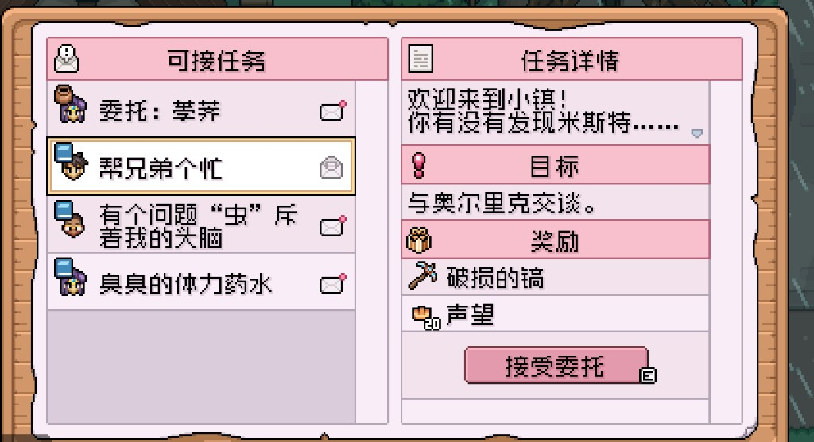
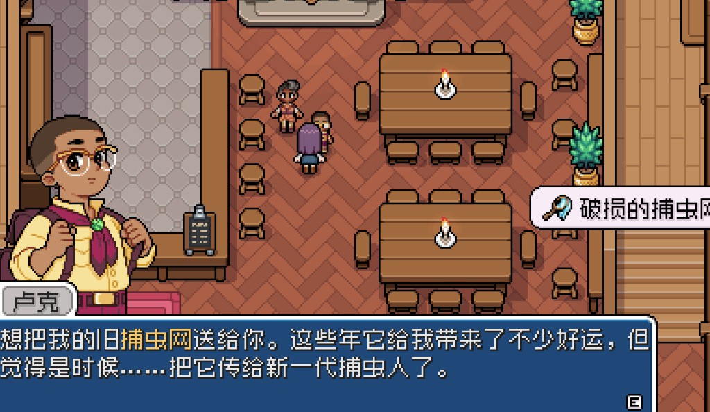

Quick answers
- Grab free worn tools from quests before paying.
- Watering and clearing pain usually beat combat FOMO.
- Blacksmith trips need materials and gold—plan downtime.
- One upgrade at a time.
- Confirm prices in your shop UI.
Free before paid
Request board and NPC quests handed us early tools (worn pickaxe path, bug net). Check Olric / board before emptying the wallet at the forge.
Pain-first order
- Whatever makes watering or clearing miserable
- Pickaxe when mines are actually open
- Nice-to-have combat last
Safe to skip
- Max tier before Summer
- Buying a tool you will not use this week
Screenshots from our save
Real Fields of Mistria shots from our first-season play. Captions in English; in-game UI language may differ.




FAQ
Upgrade watering or pickaxe first?
Whichever you use every day right now.
Tool at the forge for days?
Plan rainy fishing or forage while you wait.
Unofficial fan guide. Not affiliated with NPC Studio. Verify details in your game version.